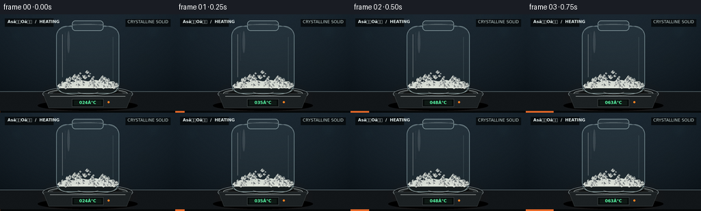
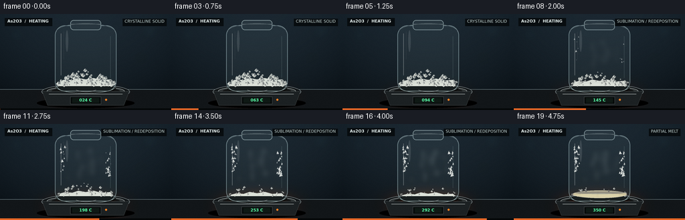
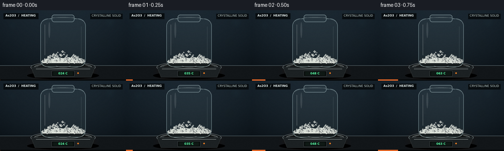
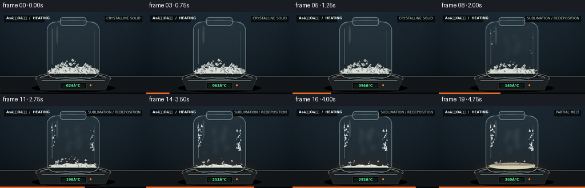

CODING AGENTS AS PIXEL WORLD MODELS
traex/GPT-5.6-Sol · phygen_120
点击播放 · 原生 RGB 像素
逐轮保存的候选
回放视频、检查图与代码变化。
每份候选均可单独播放。实际图片检查记录在下方工具轨迹中。
候选 01播放与检查图
点击播放 · 原生 RGB 像素


展开代码变化
--- 上一保存版本
+++ 本次保存版本
@@ -0,0 +1,233 @@
+from pathlib import Path
+import math
+import numpy as np
+from PIL import Image, ImageDraw, ImageFont, ImageFilter
+import artifact_io
+
+W,H,N = 256,144,20
+S=4
+w,h=W*S,H*S
+rng=np.random.default_rng(120)
+
+try:
+ FONT = ImageFont.truetype('/usr/share/fonts/truetype/dejavu/DejaVuSans.ttf', 6*S)
+ FONT_B = ImageFont.truetype('/usr/share/fonts/truetype/dejavu/DejaVuSans-Bold.ttf', 6*S)
+ FONT_T = ImageFont.truetype('/usr/share/fonts/truetype/dejavu/DejaVuSans-Bold.ttf', 8*S)
+except:
+ FONT=FONT_B=FONT_T=ImageFont.load_default()
+
+def sc(v): return int(round(v*S))
+def pts(seq): return [(sc(x),sc(y)) for x,y in seq]
+
+def ellipse(draw, box, **kw): draw.ellipse(tuple(sc(x) for x in box), **kw)
+def rect(draw, box, **kw): draw.rectangle(tuple(sc(x) for x in box), **kw)
+def line(draw, xy, **kw): draw.line(pts(xy), **kw)
+
+def rgba_layer(): return Image.new('RGBA',(w,h),(0,0,0,0))
+
+# fixed particles: bottom crystals
+crystals=[]
+for i in range(92):
+ x=float(rng.uniform(86,171))
+ # mound profile: higher near center
+ top=106 - 24*max(0,1-abs(x-128)/46)**0.65
+ y=float(rng.uniform(top,108))
+ size=float(rng.uniform(1.6,5.2))
+ rot=float(rng.uniform(0,math.tau))
+ phase=float(rng.uniform(0,math.tau))
+ crystals.append((x,y,size,rot,phase))
+# fixed deposition nuclei on upper cooler walls
+nuclei=[]
+for i in range(46):
+ side=-1 if i%2==0 else 1
+ x=(93 if side<0 else 163)+rng.uniform(-2.5,5.0)*(1 if side<0 else -1)
+ y=rng.uniform(34,79)
+ size=rng.uniform(.8,2.8)
+ birth=rng.uniform(.24,.82)
+ ang=rng.uniform(0,math.tau)
+ nuclei.append((x,y,size,birth,ang))
+
+# dust specks on bench/background
+specks=[(rng.uniform(0,W),rng.uniform(20,112),rng.uniform(.15,.5),rng.uniform(.05,.18)) for _ in range(80)]
+
+frames=[]
+for fi in range(N):
+ t=fi/(N-1)
+ # ease for heating transformation
+ heat=t*t*(3-2*t)
+ temp=24 + 326*(t**1.15)
+ # backdrop smooth photographic gradient
+ yy,xx=np.mgrid[0:h,0:w]
+ yn=yy/h; xn=xx/w
+ base=np.zeros((h,w,3),dtype=np.float32)
+ vign=((xn-.5)**2*1.3+(yn-.43)**2*.7)
+ base[:,:,0]=17 + 13*(1-yn) - 19*vign
+ base[:,:,1]=25 + 18*(1-yn) - 23*vign
+ base[:,:,2]=31 + 22*(1-yn) - 26*vign
+ # subtle warm glow from heating element
+ glow=np.exp(-(((xn-.5)/.33)**2+((yn-.79)/.18)**2)*3.0)*heat
+ base[:,:,0]+=32*glow; base[:,:,1]+=10*glow; base[:,:,2]-=4*glow
+ base=np.clip(base,0,255).astype(np.uint8)
+ im=Image.fromarray(base,'RGB').convert('RGBA')
+ d=ImageDraw.Draw(im,'RGBA')
+ # soft out-of-focus lab lights
+ bokeh=rgba_layer(); bd=ImageDraw.Draw(bokeh,'RGBA')
+ for bx,by,br,col in [(25,31,10,(53,103,116)),(224,25,13,(47,85,96)),(211,67,6,(104,70,41)),(46,74,5,(42,94,91))]:
+ ellipse(bd,(bx-br,by-br,bx+br,by+br),fill=col+(25,))
+ bokeh=bokeh.filter(ImageFilter.GaussianBlur(sc(7)))
+ im=Image.alpha_composite(im,bokeh); d=ImageDraw.Draw(im,'RGBA')
+ # horizontal bench behind apparatus
+ rect(d,(0,113,256,144),fill=(18,22,25,255))
+ line(d,[(0,113),(256,113)],fill=(99,115,120,75),width=sc(.7))
+ # reflected warm spill on bench
+ spill=rgba_layer(); sd=ImageDraw.Draw(spill,'RGBA')
+ ellipse(sd,(58,105,198,145),fill=(236,91,24,int(22+48*heat)))
+ spill=spill.filter(ImageFilter.GaussianBlur(sc(13)))
+ im=Image.alpha_composite(im,spill); d=ImageDraw.Draw(im,'RGBA')
+ # hot plate shadow and body
+ ellipse(d,(55,126,201,141),fill=(0,0,0,145))
+ # plate top, layered metallic ellipses
+ ellipse(d,(62,105,194,128),fill=(19,23,25,255),outline=(132,143,145,145),width=sc(.7))
+ ellipse(d,(70,108,186,123),fill=(47,52,53,255),outline=(174,181,179,100),width=sc(.65))
+ ellipse(d,(77,110,179,121),fill=(18,20,20,255))
+ # heating coil glow
+ coil=rgba_layer(); cd=ImageDraw.Draw(coil,'RGBA')
+ for j in range(5):
+ inset=j*6
+ ellipse(cd,(82+inset,112+inset*.055,174-inset,120-inset*.055),outline=(255,66+18*j,13,int(35+155*heat)),width=sc(.65+heat*.55))
+ coil=coil.filter(ImageFilter.GaussianBlur(sc(1.4)))
+ im=Image.alpha_composite(im,coil); d=ImageDraw.Draw(im,'RGBA')
+ # front housing
+ d.polygon(pts([(63,116),(193,116),(185,137),(71,137)]),fill=(28,33,35,255),outline=(102,109,110,180))
+ line(d,[(73,120),(183,120)],fill=(160,166,165,45),width=sc(.7))
+ # display panel
+ rect(d,(105,124,151,135),fill=(7,11,11,255),outline=(75,83,82,230),width=sc(.6))
+ rect(d,(108,126,148,133),fill=(15,25,21,255))
+ # temperature string
+ temp_text=f'{int(round(temp)):03d}°C'
+ td=ImageDraw.Draw(im)
+ bbox=td.textbbox((0,0),temp_text,font=FONT_B)
+ td.text((sc(128)-(bbox[2]-bbox[0])//2,sc(125.4)),temp_text,font=FONT_B,fill=(89,255,168,255),stroke_width=0)
+ # amber indicator
+ ellipse(d,(157,127,160,130),fill=(255,130,35,220))
+ # vessel shadow inside/base
+ ellipse(d,(84,104,173,119),fill=(0,0,0,115))
+ # glass tube interior faint body: closed borosilicate vial
+ glass=rgba_layer(); gd=ImageDraw.Draw(glass,'RGBA')
+ # rounded vial silhouette
+ gd.rounded_rectangle((sc(82),sc(17),sc(174),sc(116)),radius=sc(15),fill=(174,218,225,17),outline=(208,239,242,120),width=sc(1.05))
+ # neck/cap seal
+ gd.rounded_rectangle((sc(105),sc(9),sc(151),sc(24)),radius=sc(5),fill=(160,197,202,25),outline=(212,237,238,135),width=sc(.9))
+ gd.line(pts([(106,15),(150,15)]),fill=(224,243,243,75),width=sc(.65))
+ # rim shadows
+ gd.arc((sc(83),sc(99),sc(173),sc(119)),0,180,fill=(216,239,238,100),width=sc(.8))
+ gd.arc((sc(84),sc(14),sc(172),sc(39)),180,360,fill=(231,249,250,75),width=sc(.8))
+ im=Image.alpha_composite(im,glass)
+ # material inside - behind front glass highlights
+ mat=rgba_layer(); md=ImageDraw.Draw(mat,'RGBA')
+ # progression fractions
+ sub=np.clip((t-.20)/.62,0,1) # sublimation/volume loss
+ melt=np.clip((temp-292)/48,0,1)
+ # pale powder bed under crystals, slowly lower and become liquid
+ bedtop=98 + 6.5*sub - 1.2*melt
+ # white solid bed
+ md.polygon(pts([(88,108),(90,bedtop+2),(98,bedtop),(108,bedtop+1),(117,bedtop-2),(128,bedtop),(140,bedtop-2),(151,bedtop+1),(165,bedtop),(169,108)]),
+ fill=(230,235,226,int(235*(1-.72*melt))),outline=(250,252,247,180))
+ # crystals; deterministic disappearance from smallest/uppermost as sublimation grows
+ for idx,(cx,cy,sz,ang,ph) in enumerate(crystals):
+ # shrink / settle while preserving crystals before high temperature
+ survival=((idx*37)%101)/100
+ if survival < sub*.72: continue
+ local_shrink=1-.48*sub
+ s=sz*local_shrink
+ # settle toward bed as mound shrinks
+ cy2=cy + 7.0*sub*(1-(cy-82)/28)
+ # octahedral/diamond crystal, with bright facet
+ dx=math.cos(ang)*s; dy=math.sin(ang)*s*.45
+ poly=[(cx,cy2-s*.75),(cx+s*.72,cy2),(cx,cy2+s*.62),(cx-s*.72,cy2)]
+ shade=int(222+25*math.sin(ph)**2)
+ md.polygon(pts(poly),fill=(shade,shade+min(255-shade,4),shade-5,225),outline=(255,255,250,170))
+ md.polygon(pts([(cx,cy2-s*.75),(cx+s*.72,cy2),(cx,cy2)]),fill=(255,255,250,90))
+ md.line(pts([(cx,cy2-s*.72),(cx,cy2+s*.55)]),fill=(175,188,183,90),width=max(1,sc(.25)))
+ # molten phase at high temperature: glassy, shallow, faint straw cast
+ if melt>0:
+ md.ellipse((sc(88),sc(101-1.5*melt),sc(169),sc(111)),fill=(242,231,186,int(105+100*melt)),outline=(255,247,217,int(160*melt)),width=sc(.8))
+ md.ellipse((sc(92),sc(101),sc(165),sc(105)),fill=(255,253,226,int(50+70*melt)))
+ # a couple remaining islands
+ for cx in (108,142):
+ rr=3*(1-melt*.65)
+ md.ellipse((sc(cx-rr),sc(99-rr*.35),sc(cx+rr),sc(102+rr*.35)),fill=(248,248,239,int(190*(1-melt*.55))))
+ im=Image.alpha_composite(im,mat)
+ # vapor mist within ampoule, stronger in latter half
+ vap=np.clip((temp-135)/170,0,1)*(1-.2*melt)
+ if vap>0:
+ vl=rgba_layer(); vd=ImageDraw.Draw(vl,'RGBA')
+ for j in range(9):
+ cx=104+(j*17)%52 + 3*math.sin(fi*.38+j)
+ cy=82-j*5 + 2*math.sin(fi*.45+j*.7)
+ rx=3.2+j%3*1.7; ry=7+j%2*3
+ vd.ellipse((sc(cx-rx),sc(cy-ry),sc(cx+rx),sc(cy+ry)),fill=(227,239,236,int(12+17*vap)))
+ vl=vl.filter(ImageFilter.GaussianBlur(sc(4.0)))
+ im=Image.alpha_composite(im,vl)
+ # condensed crystalline frost on cooler upper walls, nucleates progressively
+ dep=rgba_layer(); dd=ImageDraw.Draw(dep,'RGBA')
+ for x0,y0,sz,birth,ang in nuclei:
+ if sub <= birth: continue
+ grow=min(1,(sub-birth)/.18)
+ ss=sz*(.3+.7*grow)
+ # crystalline star/octagonal deposit
+ col=(245,248,243,int(95+135*grow))
+ dd.polygon(pts([(x0,y0-ss),(x0+ss*.48,y0-ss*.15),(x0+ss*.82,y0+ss*.46),(x0,y0+ss*.32),(x0-ss*.55,y0+ss*.72),(x0-ss*.38,y0)]),fill=col)
+ dd.line(pts([(x0,y0-ss*1.45),(x0,y0+ss*.7)]),fill=(255,255,252,int(110+90*grow)),width=max(1,sc(.25)))
+ if grow>.6:
+ dd.line(pts([(x0,y0),(x0+math.cos(ang)*ss*1.3,y0+math.sin(ang)*ss*1.3)]),fill=(248,250,245,150),width=max(1,sc(.2)))
+ im=Image.alpha_composite(im,dep)
+ # front glass highlights/refractions
+ hi=rgba_layer(); hd=ImageDraw.Draw(hi,'RGBA')
+ hd.line(pts([(91,29),(91,92)]),fill=(246,255,255,105),width=sc(1.1))
+ hd.line(pts([(95,26),(95,68)]),fill=(255,255,255,42),width=sc(.45))
+ hd.line(pts([(165,33),(165,96)]),fill=(205,237,240,65),width=sc(.65))
+ hd.arc((sc(84),sc(17),sc(173),sc(117)),70,110,fill=(255,255,255,100),width=sc(.8))
+ # specular patches
+ hd.ellipse((sc(98),sc(24),sc(102),sc(57)),fill=(255,255,255,28))
+ hi=hi.filter(ImageFilter.GaussianBlur(sc(.35)))
+ im=Image.alpha_composite(im,hi)
+ # heat shimmer rising around vessel (thin moving warm distortive lines)
+ if heat>.08:
+ sh=rgba_layer(); shd=ImageDraw.Draw(sh,'RGBA')
+ for j in range(5):
+ x0=73+j*28+4*math.sin(fi*.44+j*1.4)
+ coords=[]
+ for k in range(9):
+ y0=109-k*7
+ xx0=x0+1.5*math.sin(k*.9+fi*.55+j)
+ coords.append((xx0,y0))
+ shd.line(pts(coords),fill=(255,174,96,int(10+25*heat)),width=sc(.45))
+ sh=sh.filter(ImageFilter.GaussianBlur(sc(.9)))
+ im=Image.alpha_composite(im,sh)
+ d=ImageDraw.Draw(im,'RGBA')
+ # top restrained documentary labels
+ rect(d,(7,6,78,18),fill=(8,13,16,165))
+ td=ImageDraw.Draw(im)
+ td.text((sc(11),sc(7.1)),'AsâOâ / HEATING',font=FONT_B,fill=(226,237,236,235))
+ # timeline/progress at bottom edge
+ rect(d,(0,141.5,256,144),fill=(5,8,9,230))
+ rect(d,(0,141.5,256*t,144),fill=(231,104,39,255))
+ # tiny safety/phase label next to vessel, unobtrusive
+ if temp < 140: phase='CRYSTALLINE SOLID'
+ elif temp < 292: phase='SUBLIMATION / REDEPOSITION'
+ else: phase='PARTIAL MELT'
+ pb=td.textbbox((0,0),phase,font=FONT)
+ px=246-(pb[2]-pb[0])/S
+ rect(d,(px-3,7,249,18),fill=(8,13,16,150))
+ td.text((sc(px),sc(7.2)),phase,font=FONT,fill=(192,209,207,225))
+ # subtle grain for coherent photographic texture
+ arr=np.array(im.convert('RGB'),dtype=np.int16)
+ noise=rng.normal(0,1.15,(h,w,1))
+ arr=np.clip(arr+noise,0,255).astype(np.uint8)
+ frame=Image.fromarray(arr).resize((W,H),Image.Resampling.LANCZOS)
+ frames.append(np.array(frame,dtype=np.uint8))
+
+frames=np.stack(frames)
+artifact_io.save(frames, Path(__file__).resolve().parent)
+print('saved',frames.shape,frames.dtype)
候选 02播放与检查图
点击播放 · 原生 RGB 像素


展开代码变化
--- 上一保存版本
+++ 本次保存版本
@@ -104,7 +104,7 @@
rect(d,(105,124,151,135),fill=(7,11,11,255),outline=(75,83,82,230),width=sc(.6))
rect(d,(108,126,148,133),fill=(15,25,21,255))
# temperature string
- temp_text=f'{int(round(temp)):03d}°C'
+ temp_text=f'{int(round(temp)):03d} C'
td=ImageDraw.Draw(im)
bbox=td.textbbox((0,0),temp_text,font=FONT_B)
td.text((sc(128)-(bbox[2]-bbox[0])//2,sc(125.4)),temp_text,font=FONT_B,fill=(89,255,168,255),stroke_width=0)
@@ -209,7 +209,7 @@
# top restrained documentary labels
rect(d,(7,6,78,18),fill=(8,13,16,165))
td=ImageDraw.Draw(im)
- td.text((sc(11),sc(7.1)),'AsâOâ / HEATING',font=FONT_B,fill=(226,237,236,235))
+ td.text((sc(11),sc(7.1)),'As2O3 / HEATING',font=FONT_B,fill=(226,237,236,235))
# timeline/progress at bottom edge
rect(d,(0,141.5,256,144),fill=(5,8,9,230))
rect(d,(0,141.5,256*t,144),fill=(231,104,39,255))
可观测工具轨迹
实际执行的命令与返回图片。
命令 1exit 0
/bin/bash -lc "cat prompt.txt && printf '\\n---RULES---\\n' && cat GENERATION_RULES.md && printf '\\n---SPEC---\\n' && cat task_spec.json"
命令 2exit 0
/bin/bash -lc "find . -maxdepth 2 -type f -printf '%p %s bytes\\n' | sort"
命令 3exit 0
/bin/bash -lc "sed -n '1,240p' artifact_io.py"
命令 4exit 0
/bin/bash -lc "cat > generate.py <<'PY'
from pathlib import Path
import math
import numpy as np
from PIL import Image, ImageDraw, ImageFont, ImageFilter
import artifact_io
W,H,N = 256,144,20
S=4
w,h=W*S,H*S
rng=np.random.default_rng(120)
try:
FONT = ImageFont.truetype('/usr/share/fonts/truetype/dejavu/DejaVuSans.ttf', 6*S)
FONT_B = ImageFont.truetype('/usr/share/fonts/truetype/dejavu/DejaVuSans-Bold.ttf', 6*S)
FONT_T = ImageFont.truetype('/usr/share/fonts/truetype/dejavu/DejaVuSans-Bold.ttf', 8*S)
except:
FONT=FONT_B=FONT_T=ImageFont.load_default()
def sc(v): return int(round(v*S))
def pts(seq): return [(sc(x),sc(y)) for x,y in seq]
def ellipse(draw, box, **kw): draw.ellipse(tuple(sc(x) for x in box), **kw)
def rect(draw, box, **kw): draw.rectangle(tuple(sc(x) for x in box), **kw)
def line(draw, xy, **kw): draw.line(pts(xy), **kw)
def rgba_layer(): return Image.new('RGBA',(w,h),(0,0,0,0))
# fixed particles: bottom crystals
crystals=[]
for i in range(92):
x=float(rng.uniform(86,171))
# mound profile: higher near center
top=106 - 24*max(0,1-abs(x-128)/46)**0.65
y=float(rng.uniform(top,108))
size=float(rng.uniform(1.6,5.2))
rot=float(rng.uniform(0,math.tau))
phase=float(rng.uniform(0,math.tau))
crystals.append((x,y,size,rot,phase))
# fixed deposition nuclei on upper cooler walls
nuclei=[]
for i in range(46):
side=-1 if i%2==0 else 1
x=(93 if side<0 else 163)+rng.uniform(-2.5,5.0)*(1 if side<0 else -1)
y=rng.uniform(34,79)
size=rng.uniform(.8,2.8)
birth=rng.uniform(.24,.82)
ang=rng.uniform(0,math.tau)
nuclei.append((x,y,size,birth,ang))
# dust specks on bench/background
specks=[(rng.uniform(0,W),rng.uniform(20,112),rng.uniform(.15,.5),rng.uniform(.05,.18)) for _ in range(80)]
frames=[]
for fi in range(N):
t=fi/(N-1)
# ease for heating transformation
heat=t*t*(3-2*t)
temp=24 + 326*(t**1.15)
# backdrop smooth photographic gradient
yy,xx=np.mgrid[0:h,0:w]
yn=yy/h; xn=xx/w
base=np.zeros((h,w,3),dtype=np.float32)
vign=((xn-.5)**2*1.3+(yn-.43)**2*.7)
base[:,:,0]=17 + 13*(1-yn) - 19*vign
base[:,:,1]=25 + 18*(1-yn) - 23*vign
base[:,:,2]=31 + 22*(1-yn) - 26*vign
# subtle warm glow from heating element
glow=np.exp(-(((xn-.5)/.33)**2+((yn-.79)/.18)**2)*3.0)*heat
base[:,:,0]+=32*glow; base[:,:,1]+=10*glow; base[:,:,2]-=4*glow
base=np.clip(base,0,255).astype(np.uint8)
im=Image.fromarray(base,'RGB').convert('RGBA')
d=ImageDraw.Draw(im,'RGBA')
# soft out-of-focus lab lights
bokeh=rgba_layer(); bd=ImageDraw.Draw(bokeh,'RGBA')
for bx,by,br,col in [(25,31,10,(53,103,116)),(224,25,13,(47,85,96)),(211,67,6,(104,70,41)),(46,74,5,(42,94,91))]:
ellipse(bd,(bx-br,by-br,bx+br,by+br),fill=col+(25,))
bokeh=bokeh.filter(ImageFilter.GaussianBlur(sc(7)))
im=Image.alpha_composite(im,bokeh); d=ImageDraw.Draw(im,'RGBA')
# horizontal bench behind apparatus
rect(d,(0,113,256,144),fill=(18,22,25,255))
line(d,[(0,113),(256,113)],fill=(99,115,120,75),width=sc(.7))
# reflected warm spill on bench
spill=rgba_layer(); sd=ImageDraw.Draw(spill,'RGBA')
ellipse(sd,(58,105,198,145),fill=(236,91,24,int(22+48*heat)))
spill=spill.filter(ImageFilter.GaussianBlur(sc(13)))
im=Image.alpha_composite(im,spill); d=ImageDraw.Draw(im,'RGBA')
# hot plate shadow and body
ellipse(d,(55,126,201,141),fill=(0,0,0,145))
# plate top, layered metallic ellipses
ellipse(d,(62,105,194,128),fill=(19,23,25,255),outline=(132,143,145,145),width=sc(.7))
ellipse(d,(70,108,186,123),fill=(47,52,53,255),outline=(174,181,179,100),width=sc(.65))
ellipse(d,(77,110,179,121),fill=(18,20,20,255))
# heating coil glow
coil=rgba_layer(); cd=ImageDraw.Draw(coil,'RGBA')
for j in range(5):
inset=j*6
ellipse(cd,(82+inset,112+inset*.055,174-inset,120-inset*.055),outline=(255,66+18*j,13,int(35+155*heat)),width=sc(.65+heat*.55))
coil=coil.filter(ImageFilter.GaussianBlur(sc(1.4)))
im=Image.alpha_composite(im,coil); d=ImageDraw.Draw(im,'RGBA')
# front housing
d.polygon(pts([(63,116),(193,116),(185,137),(71,137)]),fill=(28,33,35,255),outline=(102,109,110,180))
line(d,[(73,120),(183,120)],fill=(160,166,165,45),width=sc(.7))
# display panel
rect(d,(105,124,151,135),fill=(7,11,11,255),outline=(75,83,82,230),width=sc(.6))
rect(d,(108,126,148,133),fill=(15,25,21,255))
# temperature string
temp_text=f'{int(round(temp)):03d}°C'
td=ImageDraw.Draw(im)
bbox=td.textbbox((0,0),temp_text,font=FONT_B)
td.text((sc(128)-(bbox[2]-bbox[0])//2,sc(125.4)),temp_text,font=FONT_B,fill=(89,255,168,255),stroke_width=0)
# amber indicator
ellipse(d,(157,127,160,130),fill=(255,130,35,220))
# vessel shadow inside/base
ellipse(d,(84,104,173,119),fill=(0,0,0,115))
# glass tube interior faint body: closed borosilicate vial
glass=rgba_layer(); gd=ImageDraw.Draw(glass,'RGBA')
# rounded vial silhouette
gd.rounded_rectangle((sc(82),sc(17),sc(174),sc(116)),radius=sc(15),fill=(174,218,225,17),outline=(208,239,242,120),width=sc(1.05))
# neck/cap seal
gd.rounded_rectangle((sc(105),sc(9),sc(151),sc(24)),radius=sc(5),fill=(160,197,202,25),outline=(212,237,238,135),width=sc(.9))
gd.line(pts([(106,15),(150,15)]),fill=(224,243,243,75),width=sc(.65))
# rim shadows
gd.arc((sc(83),sc(99),sc(173),sc(119)),0,180,fill=(216,239,238,100),width=sc(.8))
gd.arc((sc(84),sc(14),sc(172),sc(39)),180,360,fill=(231,249,250,75),width=sc(.8))
im=Image.alpha_composite(im,glass)
# material inside - behind front glass highlights
mat=rgba_layer(); md=ImageDraw.Draw(mat,'RGBA')
# progression fractions
sub=np.clip((t-.20)/.62,0,1) # sublimation/volume loss
melt=np.clip((temp-292)/48,0,1)
# pale powder bed under crystals, slowly lower and become liquid
bedtop=98 + 6.5*sub - 1.2*melt
# white solid bed
md.polygon(pts([(88,108),(90,bedtop+2),(98,bedtop),(108,bedtop+1),(117,bedtop-2),(128,bedtop),(140,bedtop-2),(151,bedtop+1),(165,bedtop),(169,108)]),
fill=(230,235,226,int(235*(1-.72*melt))),outline=(250,252,247,180))
# crystals; deterministic disappearance from smallest/uppermost as sublimation grows
for idx,(cx,cy,sz,ang,ph) in enumerate(crystals):
# shrink / settle while preserving crystals before high temperature
survival=((idx*37)%101)/100
if survival < sub*.72: continue
local_shrink=1-.48*sub
s=sz*local_shrink
# settle toward bed as mound shrinks
cy2=cy + 7.0*sub*(1-(cy-82)/28)
# octahedral/diamond crystal, with bright facet
dx=math.cos(ang)*s; dy=math.sin(ang)*s*.45
poly=[(cx,cy2-s*.75),(cx+s*.72,cy2),(cx,cy2+s*.62),(cx-s*.72,cy2)]
shade=int(222+25*math.sin(ph)**2)
md.polygon(pts(poly),fill=(shade,shade+min(255-shade,4),shade-5,225),outline=(255,255,250,170))
md.polygon(pts([(cx,cy2-s*.75),(cx+s*.72,cy2),(cx,cy2)]),fill=(255,255,250,90))
md.line(pts([(cx,cy2-s*.72),(cx,cy2+s*.55)]),fill=(175,188,183,90),width=max(1,sc(.25)))
# molten phase at high temperature: glassy, shallow, faint straw cast
if melt>0:
md.ellipse((sc(88),sc(101-1.5*melt),sc(169),sc(111)),fill=(242,231,186,int(105+100*melt)),outline=(255,247,217,int(160*melt)),width=sc(.8))
md.ellipse((sc(92),sc(101),sc(165),sc(105)),fill=(255,253,226,int(50+70*melt)))
# a couple remaining islands
for cx in (108,142):
rr=3*(1-melt*.65)
md.ellipse((sc(cx-rr),sc(99-rr*.35),sc(cx+rr),sc(102+rr*.35)),fill=(248,248,239,int(190*(1-melt*.55))))
im=Image.alpha_composite(im,mat)
# vapor mist within ampoule, stronger in latter half
vap=np.clip((temp-135)/170,0,1)*(1-.2*melt)
if vap>0:
vl=rgba_layer(); vd=ImageDraw.Draw(vl,'RGBA')
for j in range(9):
cx=104+(j*17)%52 + 3*math.sin(fi*.38+j)
cy=82-j*5 + 2*math.sin(fi*.45+j*.7)
rx=3.2+j%3*1.7; ry=7+j%2*3
vd.ellipse((sc(cx-rx),sc(cy-ry),sc(cx+rx),sc(cy+ry)),fill=(227,239,236,int(12+17*vap)))
vl=vl.filter(ImageFilter.GaussianBlur(sc(4.0)))
im=Image.alpha_composite(im,vl)
# condensed crystalline frost on cooler upper walls, nucleates progressively
dep=rgba_layer(); dd=ImageDraw.Draw(dep,'RGBA')
for x0,y0,sz,birth,ang in nuclei:
if sub <= birth: continue
grow=min(1,(sub-birth)/.18)
ss=sz*(.3+.7*grow)
# crystalline star/octagonal deposit
col=(245,248,243,int(95+135*grow))
dd.polygon(pts([(x0,y0-ss),(x0+ss*.48,y0-ss*.15),(x0+ss*.82,y0+ss*.46),(x0,y0+ss*.32),(x0-ss*.55,y0+ss*.72),(x0-ss*.38,y0)]),fill=col)
dd.line(pts([(x0,y0-ss*1.45),(x0,y0+ss*.7)]),fill=(255,255,252,int(110+90*grow)),width=max(1,sc(.25)))
if grow>.6:
dd.line(pts([(x0,y0),(x0+math.cos(ang)*ss*1.3,y0+math.sin(ang)*ss*1.3)]),fill=(248,250,245,150),width=max(1,sc(.2)))
im=Image.alpha_composite(im,dep)
# front glass highlights/refractions
hi=rgba_layer(); hd=ImageDraw.Draw(hi,'RGBA')
hd.line(pts([(91,29),(91,92)]),fill=(246,255,255,105),width=sc(1.1))
hd.line(pts([(95,26),(95,68)]),fill=(255,255,255,42),width=sc(.45))
hd.line(pts([(165,33),(165,96)]),fill=(205,237,240,65),width=sc(.65))
hd.arc((sc(84),sc(17),sc(173),sc(117)),70,110,fill=(255,255,255,100),width=sc(.8))
# specular patches
hd.ellipse((sc(98),sc(24),sc(102),sc(57)),fill=(255,255,255,28))
hi=hi.filter(ImageFilter.GaussianBlur(sc(.35)))
im=Image.alpha_composite(im,hi)
# heat shimmer rising around vessel (thin moving warm distortive lines)
if heat>.08:
sh=rgba_layer(); shd=ImageDraw.Draw(sh,'RGBA')
for j in range(5):
x0=73+j*28+4*math.sin(fi*.44+j*1.4)
coords=[]
for k in range(9):
y0=109-k*7
xx0=x0+1.5*math.sin(k*.9+fi*.55+j)
coords.append((xx0,y0))
shd.line(pts(coords),fill=(255,174,96,int(10+25*heat)),width=sc(.45))
sh=sh.filter(ImageFilter.GaussianBlur(sc(.9)))
im=Image.alpha_composite(im,sh)
d=ImageDraw.Draw(im,'RGBA')
# top restrained documentary labels
rect(d,(7,6,78,18),fill=(8,13,16,165))
td=ImageDraw.Draw(im)
td.text((sc(11),sc(7.1)),'AsâOâ / HEATING',font=FONT_B,fill=(226,237,236,235))
# timeline/progress at bottom edge
rect(d,(0,141.5,256,144),fill=(5,8,9,230))
rect(d,(0,141.5,256*t,144),fill=(231,104,39,255))
# tiny safety/phase label next to vessel, unobtrusive
if temp < 140: phase='CRYSTALLINE SOLID'
elif temp < 292: phase='SUBLIMATION / REDEPOSITION'
else: phase='PARTIAL MELT'
pb=td.textbbox((0,0),phase,font=FONT)
px=246-(pb[2]-pb[0])/S
rect(d,(px-3,7,249,18),fill=(8,13,16,150))
td.text((sc(px),sc(7.2)),phase,font=FONT,fill=(192,209,207,225))
# subtle grain for coherent photographic texture
arr=np.array(im.convert('RGB'),dtype=np.int16)
noise=rng.normal(0,1.15,(h,w,1))
arr=np.clip(arr+noise,0,255).astype(np.uint8)
frame=Image.fromarray(arr).resize((W,H),Image.Resampling.LANCZOS)
frames.append(np.array(frame,dtype=np.uint8))
frames=np.stack(frames)
artifact_io.save(frames, Path(__file__).resolve().parent)
print('saved',frames.shape,frames.dtype)
PY
python generate.py"命令 5exit 0
/bin/bash -lc "ls -lh pixels.npz index.html inspection.png frames/00.png frames/19.png && python - <<'PY'
from PIL import Image
import numpy as np
for i in [0,4,8,12,16,19]:
a=np.array(Image.open(f'frames/{i:02d}.png'))
print(i, a.mean((0,1)).round(1), a.std().round(1))
PY"命令 6exit 0
/bin/bash -lc "grep -n \"temp_text\\|HEATING\" generate.py | cat -v"
命令 7exit 0
/bin/bash -lc "python - <<'PY'
p='generate.py'
s=open(p,encoding='utf-8').read()
lines=s.splitlines()
for i,l in enumerate(lines):
if \"temp_text=f\" in l: lines[i]=\" temp_text=f'{int(round(temp)):03d} C'\"
if \" / HEATING'\" in l: lines[i]=\" td.text((sc(11),sc(7.1)),'As2O3 / HEATING',font=FONT_B,fill=(226,237,236,235))\"
open(p,'w',encoding='utf-8').write('\\n'.join(lines)+'\\n')
PY
python generate.py"视觉工具实际返回图片 1

视觉工具实际返回图片 2

保存候选 2 份；完成命令 7 次；可验证图片返回 2 张。原始 API 响应与完整日志保留在本地。